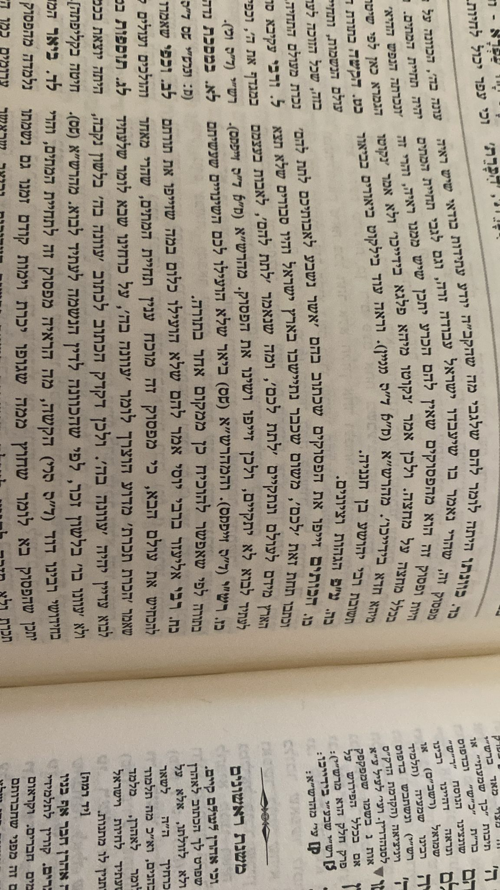

Navigating the Web: LLMs as Double-Edged Swords
Understanding Misinformation & Disinformation in the Age of AI
Revised Presentation
The Digital Deluge
The internet and social media make sharing information incredibly easy, but this also blurs the lines between truth and falsehood. [Cite: Paper Intro]
The challenge of discerning truth isn't new; historical texts, like the Talmudic example we'll see, show that the intent to mislead has ancient roots. Modern tools, however, amplify this challenge.
Misinformation
Unintentional errors, misunderstandings, or sharing without checking. [Cite: Paper Intro]
Disinformation
Intentional deception, fake news, or manipulation for an agenda. [Cite: Paper Intro]
Historical Disinformation: An Ancient Example
This excerpt from the Talmud (Sanhedrin 90b) discusses individuals spreading falsehoods, showing that the problem of disinformation isn't new, even if the tools change.
מסכת סנהדרין דף צ עמוד ב
Talmud Explanation (Maharsha)
The Maharsha commentary explains the context and implications of the disinformation discussed in the Talmudic passage.
פירוש המהרש"א
Tackling Mis/Disinformation: Early Approaches
Before the latest LLMs, various computational methods were developed to identify and analyze false information. [Cite: Paper Sec. II]
Tracking how information spreads online to spot suspicious patterns.
Analyzing text style, subject, and performing fact-checking via NLP.
Using propagation network properties to classify news (e.g., bots, user interactions).
Approaches focusing on single (unimodal) or multiple (multimodal) data types.
Unimodal Detection: Focusing on One Channel
Unimodal detection analyzes a single type of data, like text or images, to spot inaccuracies. [Cite: Paper Sec. II.A]
Uses lexical analysis, synonym discovery, and models like BERT to find patterns in text (e.g., fake news, hate speech).
Focuses on image uniformity, GAN-generated artifacts (frequency spectrum), or dissemination patterns of fake images.
These methods lay groundwork but often struggle with sophisticated, context-rich disinformation.
Multimodal Detection: The Bigger Picture
Combines information from multiple sources (e.g., text + image, text + audio) for more robust detection. Generally more effective. [Cite: Paper Sec. II.B]
Looks for inconsistencies or confirmations between different data types (e.g., an image and its caption).
Combines features extracted from text, images, and other sources into a joint representation for classification.
Some methods use human-in-the-loop systems or synthetic data (e.g., CHASMA) to improve model training and performance.
These approaches are more promising but still face challenges with the nuances of human language and visual manipulation.
Why Does Misinformation Spread So Easily?
Several factors contribute to the rapid and wide dissemination of false or misleading content online. [Cite: Paper Sec. II]
- Targeted Exposure: Disinformation can be tailored and delivered based on user demographics and behaviors.
- Automated Amplification: Bots and trolls significantly boost the spread on social networks.
- Content Characteristics: Information with clear causal structures or high semantic coherence is more easily absorbed and shared.
- Psychological Factors: Extreme political views, ideological motivations, desire for social reward, and perceived source credibility all play a role.
- Social Learning: Users are influenced by what others share, even if it's inaccurate.
Enter the Game Changer: Large Language Models
LLMs like ChatGPT, Gemini, etc., represent a significant leap in AI's ability to process and generate human-like language. [Cite: Paper Sec. III]
Let's look under the hood...
LLM Fundamentals: How They Work
LLMs learn patterns from vast amounts of text data to understand and generate language. [Cite: Paper Sec. III]
Trained on diverse text (books, articles, websites) to learn grammar, facts, and reasoning patterns.
The core technology, enabling models to handle sequential data and capture long-range context.
Workflow: Data -> Training -> Foundation Model -> Adaptation -> Tasks (Q&A, Summarization). [Cite: Fig 2, Paper Sec. III]
Deep Dive: Transformer Architecture
Transformers process words in relation to all other words in a sequence, not just sequentially. [Cite: Paper Sec. III]
- Embedding Layer: Converts words into numerical vectors.
- Positional Encoding: Adds information about word order.
- Multi-Head Attention: Core mechanism, allows focusing on different parts of input. (More next!)
- Feed-Forward Networks: Process information from attention layers.
- Layers are stacked for deeper processing.
Key Ingredient: Self-Attention
Self-attention allows the model to weigh the importance of different words when processing each word in a sequence. [Cite: Paper Sec. III]
- Calculates "attention scores" between words.
- Words that are more relevant to each other get higher scores.
- Helps capture context, resolve ambiguity, and understand long-range dependencies.
- Multi-Head Attention: Performs this process multiple times in parallel, focusing on different types of relationships.
Broad Capabilities of LLMs
Their training enables a wide range of language-based tasks: [Cite: Paper Sec. III]
Comprehending text, answering questions with human-like accuracy.
Creating coherent text, articles, stories, and summarizing long documents.
Translating between languages and identifying emotional tone in text.
Assisting in software development by generating code snippets and helping find errors.
LLMs & The Creation of Misinformation
Despite their power, LLMs can be involved in spreading false information, both intentionally and unintentionally. [Cite: Paper Sec. IV]
False information can "contaminate" an LLM's knowledge, affecting related outputs.
LLMs may trust and repeat errors if presented in a seemingly authoritative format (e.g., fake news style).
Malicious users can craft prompts ("jailbreaking") to bypass safety measures and generate harmful content.
LLMs can create highly convincing fake news, social media posts, and even images. (See Fig 3, 4, 12 from paper)
The Deception Challenge
Specific characteristics of LLMs make their misuse particularly problematic. [Cite: Paper Sec. IV]
LLM text is hard to distinguish from human writing, for both people and other AIs. [Cite: Paper Sec. IV, Chen & Shu 2023]
Models have outdated knowledge, limiting their ability to address recent events/misinformation. (e.g., Fig 16 in paper)
LLMs can confidently generate plausible-sounding but entirely false or nonsensical information. (e.g., Fig 13 in paper)
Real-World Exploitation Domains
LLM-driven misinformation impacts various sensitive areas: [Cite: Paper Sec. IV Subsections]
Spreading false narratives about candidates or parties to influence elections.
Fueling unrest, eroding trust, and amplifying religious/ethnic propaganda.
Promoting false cures, undermining public health efforts (e.g., vaccines).
Manipulating stock prices, creating fake product reviews, and promoting scam investments.
Harmful Potential: Seeing is Believing... Or Is It?

Biased image generation (Fig 15 in paper)
Generating fake news (Fig 3, 11 in paper)
Spreading political lies & propaganda
Creating misleading visuals (Fig 12 in paper)
Showing unfair bias (Fig 14 in paper)
Misleading meme (Fig 9 in paper)
Beneficial Potential: LLMs Correcting the Record
ChatGPT Conversation Example
Is this sentence factually correct?
"The symptoms of Alzheimer's disease are a normal part of aging."
Produce a concise explanation and provide sources.
ChatGPT said: (See Fig 8 in paper)
No, the statement "The symptoms of Alzheimer's disease are a normal part of aging" is factually incorrect.
Explanation:
Alzheimer's disease is a progressive brain disorder... not a normal part of aging...
Sources:
1. Alzheimer's Association
2. National Institute on Aging (NIA)
Debunking health myths (Fig 5, 7 in paper)
Providing factual health info (e.g., Arthritis, Alzheimer's)
Adding context to misleading images (Fig 9 in paper)
Offering fast, sourced explanations (Fig 10 in paper)
Key Challenges & Mitigation Strategies
Overcoming hurdles for responsible LLM use. [Cite: Paper Sec. VII]
Developing robust methods to identify AI text; exploring watermarking.
Refining training data, developing de-biasing techniques, ensuring algorithmic fairness.
Keeping info current via search augmentation, knowledge injection, continual learning.
Establishing guidelines for transparency, fairness, accountability, and data privacy.
Conclusion: The Double-Edged Sword
- ✅ Good: LLMs can combat mis/disinformation (fact-checking, context, education). [Cite: Paper Sec. V]
- ❌ Bad: LLMs can create & spread mis/disinformation (fakes, hallucinations, bias). [Cite: Paper Sec. IV]
- ✨ Risk & Potential: Huge potential for good, but risks are significant and require careful management.
- 🧠 Action: Requires ongoing research, ethical development, robust detection, user education, and thoughtful regulation. [Cite: Paper Sec. VII, IX, X]
Questions?
Let's discuss! (e.g., How can we balance LLM innovation with safety?)